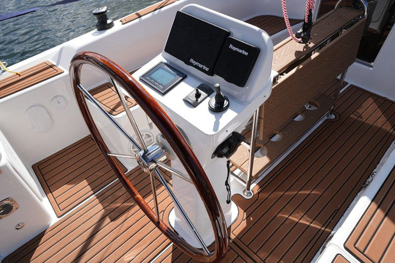

Czarter jachtów · Giżycko
Mazury w najlepszym wydaniu
Wolność. Przygoda. Niezapomniane chwile.
Sprawdź dostępność i zarezerwuj online- Szybka rezerwacjaSprawdź dostępność i zarezerwuj w kilka minut.
- Sprawdzone jachtyKomfortowe i świetnie wyposażone.
- Lokalna wiedzaDoradzimy najlepsze trasy i miejsca.
- Wsparcie na każdym etapieJesteśmy blisko – przed, w trakcie i po rejsie.
Polecane jachty




Aktualności


O nas
Ludzie. Pasja. Mazury.
Od ponad 10 lat oferujemy czarter jachtów na Mazurach, zapewniając bezpieczny i spokojny wypoczynek na wodzie. Stawiamy na jakość techniczną, niezawodność i realny komfort załogi.
Nasza flota to starannie przygotowane jachty żaglowe, motorowe i houseboaty, regularnie serwisowane i w pełni wyposażone. Zapewniamy szkolenie przed rejsem, pomoc w planowaniu trasy oraz wsparcie techniczne na Szlaku Wielkich Jezior Mazurskich.
- Sebastian PażyszekWłaściciel
- BeataObsługa czarteru
- KamilObsługa czarteru
- PatrycjaObsługa czarteru

Nasza lokalizacja
Giżycko – serce Mazur
Stacjonujemy w Giżycku w porcie Stranda, położonym nad zatoką Tracz na jeziorze Kisajno. Stranda to nowoczesny kompleks wypoczynkowy znajdujący się ok. 2 km od centrum Giżycka.
Zobacz na mapieRezerwacja online
Sprawdź dostępność
Okno rezerwacjiTu wyświetli się kalendarz z systemu rezerwacji.